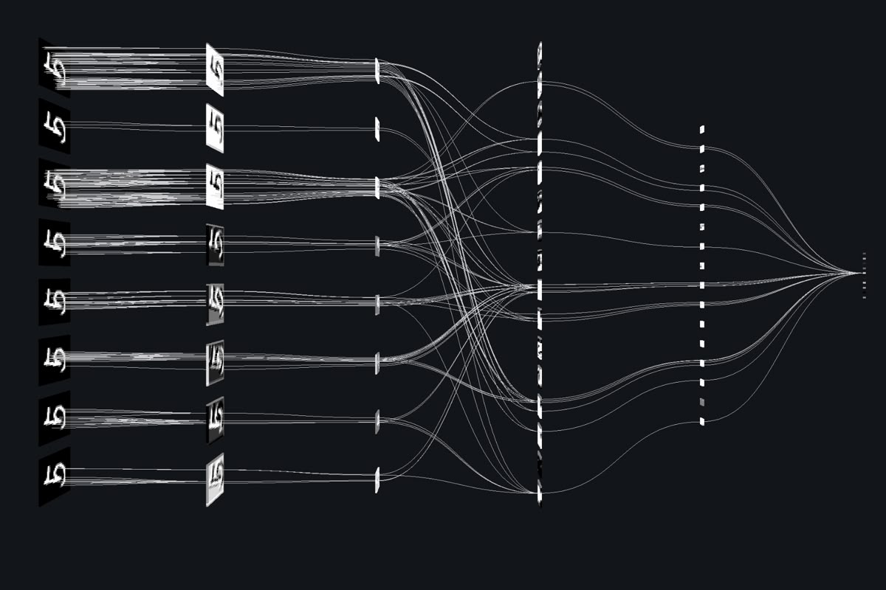

Soluções
Uma jornada tecnológica conectada: pesquisar, prototipar, simular, aprender com dados e integrar sistemas com clareza do conceito à aplicação.
 Pesquisa e desenvolvimento
Pesquisa e desenvolvimento
Da hipótese ao protótipo.
Do protótipo ao sistema.
Pesquisa aplicada e desenvolvimento multidisciplinar para transformar uma oportunidade em protótipo funcional, integrando arquitetura, hardware, mecânica, firmware, software e testes.
- Pesquisa, viabilidade e engenharia de sistemas
- Hardware, mecânica, firmware e software
- Integração, validação e transferência técnica
 Engenharia de simulação
Engenharia de simulação
Antecipe o comportamento.
Decida com evidências.
Simulações estruturais, térmicas, fluidodinâmicas, dinâmicas, explícitas, eletromagnéticas e multifísicas para apoiar desenvolvimento, validação e otimização de produtos e processos.
- Escopo e premissas definidos com o cliente
- Modelos verificáveis e resultados interpretados
- Relatório técnico orientado à decisão

Inteligência aplicadaDados que percebem.
Sistemas que agem.
IA generativa, machine learning, visão computacional e Edge AI conectados aos dados, processos e equipamentos para transformar informação em decisões e automações úteis.
- LLMs, RAG, assistentes e agentes
- Modelos preditivos e detecção de anomalias
- Visão computacional, MLOps e governança
 Engenharia aeroespacial
Engenharia aeroespacial
A missão define
a aeronave.
Desenvolvimento e integração de sistemas aéreos não tripulados, componentes, aviônicos, sensores e cargas úteis configurados em torno da necessidade operacional.
- Arquitetura e desenvolvimento de plataformas
- Integração de aviônicos, sensores e payloads
- Prototipagem, verificação e documentação técnica